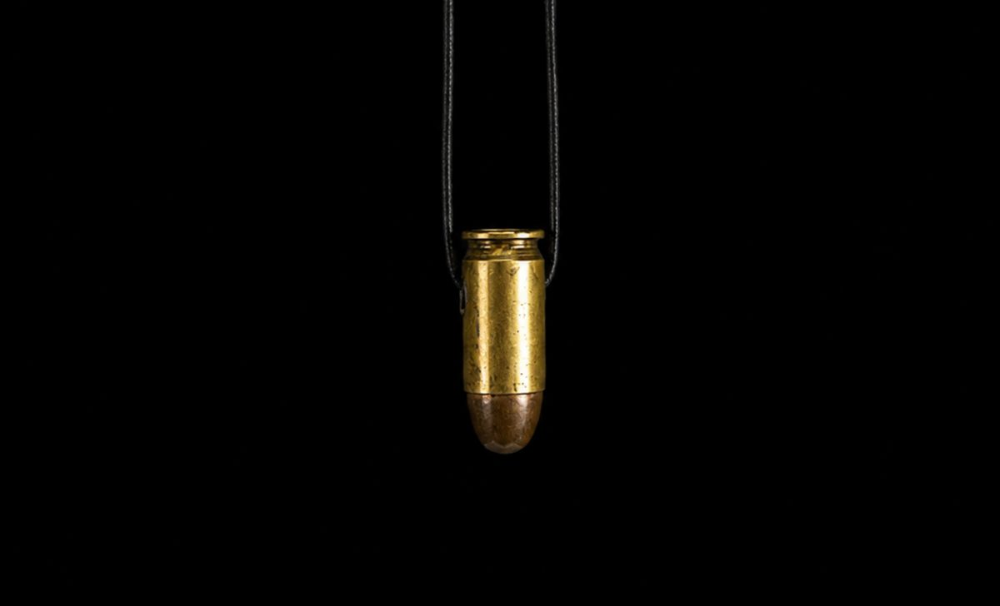
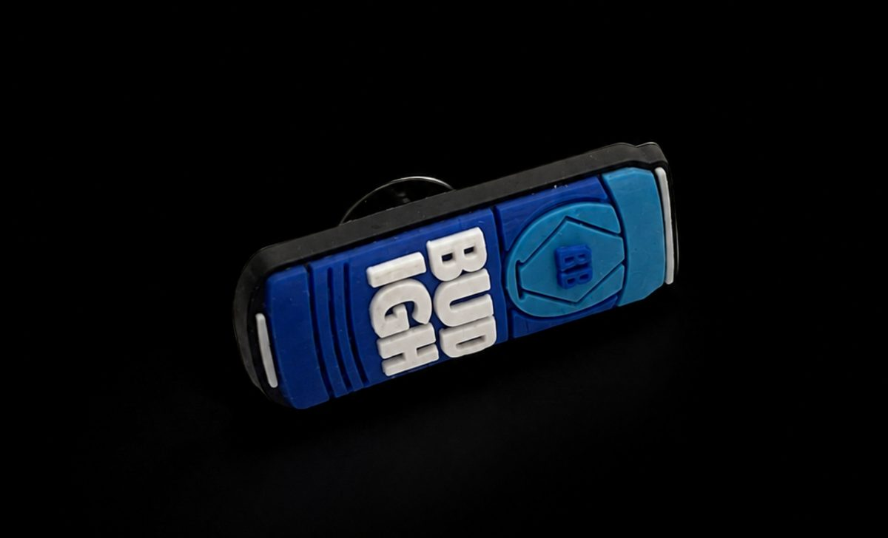
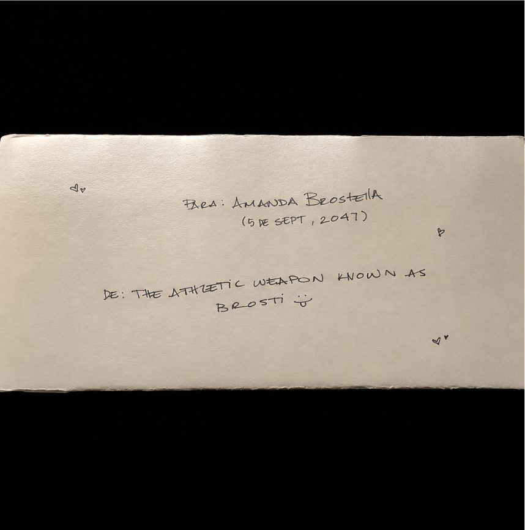

Bajo la escalera · Archivo de la colección · 3 registros · Cohorte 2026
Amanda Brostella
3 objetos registrados en 2026. Las fotografías conservan su apariencia antes del cierre.
MUFU-025 · registro 01
{kind=link}

Collar con dije de bala
Collar compuesto por un cordón negro y un dije metálico en forma de cartucho de bala. El dije presenta un cuerpo de tono dorado, con señales visibles de desgaste, oxidación y pátina superficial, y una punta de tonalidad más oscura
- Origen
- Panamá, Panamá. Año: 2002
- Medidas
- Alto: 3.24 cm. Ancho máximo: 1.21 cm. Profundidad: 1.21 cm
- Material
- Metal, aparentemente latón, con punta metálica de tonalidad oscura. Cordón textil negro
- Filiación
- Objeto de
- Depósito
- Cápsula MUFU · Ciudad del Saber, edificio 106 · 8.999423° N 79.582829° W
Registro de Amanda Brostella. Transcripción conservada; sus campos son declaraciones del registro.
Procedencia y método · Ver sus objetos en el archivo
MUFU-026 · registro 02
{kind=link}

Pin decorativo para Crocs "Bud Light"
Accesorio decorativo de pequeño formato diseñado para insertarse en los orificios de calzado tipo Crocs. Presenta forma rectangular alargada, borde negro y una composición en tonos azul oscuro y celeste. En el frente incorpora en relieve la inscripción blanca "BUD LIGHT", ", acompañada por un elemento gráfico en el extremo derecho. Posee un botón circular negro en la parte posterior que permite fijarlo al calzado
- Origen
- Panamá, Panamá. Año: 2023
- Medidas
- 3.5 cm de largo ×1.2 cm de alto × 0.8-1 cm de profundidad
- Material
- PVC flexible / caucho sintético moldeado
- Filiación
- Pieza obsequiada por antiguos amigos, adquirida previamente en una tienda de segunda mano. Su
- Depósito
- Cápsula MUFU · Ciudad del Saber, edificio 106 · 8.999423° N 79.582829° W
Registro de Amanda Brostella. Transcripción conservada; sus campos son declaraciones del registro.
Procedencia y método · Ver sus objetos en el archivo
MUFU-027 · registro 03
{kind=link}

Carta escrita a mano dirigida a Amanda Brostella dentro de 21 años
Carta manuscrita de carácter personal, elaborada sobre papel de tono marfil y plegada en varias secciones. El documento está dirigido a una versión futura de la destinataria y contiene reflexiones personales, observaciones sobre el presente y una serie de indicaciones destinadas a ser revisadas posteriormente. La pieza fue concebida específicamente para permanecer cerrada y fuera de consulta durante un periodo aproximado de 21 años, con apertura prevista para el año 204
- Origen
- Panamá, Panamá. Año: 2026
- Medidas
- Dimensiones variables según el estado de plegado; documento de formato rectangular y espesor mínimo correspondiente a una hoja de papel
- Material
- Papel de tono marfil, con escritura manuscrita en tinta negra
- Filiación
- Pieza de autoría personal concebida como documento de archivo temporal. Su relevancia reside en registrar pensamientos, circunstancias у percepciones correspondientes al año 2026 para ser confrontados con la experiencia de la misma destinataria en 2047.El periodo deliberado de clausura constituye una parte integral de la pieza y de su función documental
- Depósito
- Cápsula MUFU · Ciudad del Saber, edificio 106 · 8.999423° N 79.582829° W
Registro de Amanda Brostella. Transcripción conservada; sus campos son declaraciones del registro.
Procedencia y método · Ver sus objetos en el archivo
← Volver a la colección Apertura 05.09.2047 · 07:56